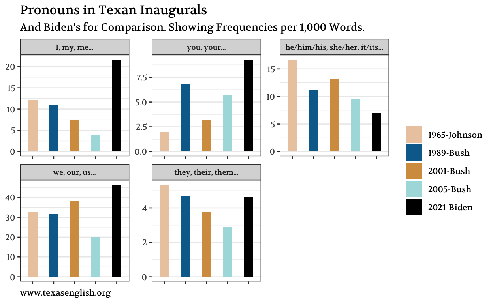

The frequency of various parts of speech.
The four speeches will be part-of-speech tagged (POS-tagged) for this analysis, so that each word will be marked for its grammatical class.
| doc_id | sid | tid | token | token_with_ws | lemma | upos | xpos | tid_source | relation | year | president |
|---|---|---|---|---|---|---|---|---|---|---|---|
| 1965-Johnson | 1 | 1 | My | My | -PRON- | DET | PRP$ | 3 | poss | 1965 | Johnson |
| 1965-Johnson | 1 | 2 | fellow | fellow | fellow | ADJ | JJ | 3 | amod | 1965 | Johnson |
| 1965-Johnson | 1 | 3 | countrymen | countrymen | countryman | NOUN | NNS | 19 | nsubj | 1965 | Johnson |
| 1965-Johnson | 1 | 5 | on | on | on | ADP | IN | 19 | prep | 1965 | Johnson |
| 1965-Johnson | 1 | 6 | this | this | this | DET | DT | 7 | det | 1965 | Johnson |
| 1965-Johnson | 1 | 7 | occasion | occasion | occasion | NOUN | NN | 5 | pobj | 1965 | Johnson |
| 1965-Johnson | 1 | 9 | the | the | the | DET | DT | 10 | det | 1965 | Johnson |
| 1965-Johnson | 1 | 10 | oath | oath | oath | NOUN | NN | 19 | nsubj | 1965 | Johnson |
| 1965-Johnson | 1 | 11 | I | I | -PRON- | PRON | PRP | 13 | nsubj | 1965 | Johnson |
| 1965-Johnson | 1 | 12 | have | have | have | AUX | VBP | 13 | aux | 1965 | Johnson |
We will work with the upos column, which gives a fine enough classification of POS into 14 different types:
[1] "DET" "ADJ" "NOUN" "ADP" "PRON" "AUX" "VERB" "CCONJ"
[9] "PROPN" "PART" "ADV" "NUM" "SCONJ" "INTJ" The unit of analysis will be frequency per 1,000 words, to make the numbers comparable.
The following plot shows these values ordered by POS-tag.
Figure 1: Comparison of POS frequencies.
A big point of interest is the degree of overall nominal vs. verbal nature of a text. There is a group of parts of speech that pattern together with nouns. They are:
noun (NOUN)
proper noun (PROPN)
adjective (ADJ)
determiner (DET)
preposition (ADP)
The other group of tags that co-occur and that characterize a more verbal style are
verb (VERB)
auxiliary (AUX)
adverb (ADV)
conjunction (CCONJ, SCONJ)
Let us treat the two groups in aggregate and compare the speeches for their frequencies.
Figure 2: Aggregate counts for nominal and verbal POS-groups in the speeches.
The speech that truly stands out (again) is 2005-Bush. He makes a clear switch to more nominal style, compensated by a drop in verbal tags, relative to his Texan predecessors.
A more nominal style corresponds to more “conceptual” thinking, whereas a more verbal style corresponds to more “dynamic” thinking. This conceptual-dynamic index (based on POS frequencies) has been shown to correlate with academic success in college students, where the students who show more nominal/conceptual styles in their admissions essays end up having significantly greater academic success over 4 years in college (Pennebaker et al. 2014). Written, academic texts are the most nominal on a continuum from verbal to nominal style; informal spoken conversations are the most verbal (Biber 1991).
So that is what we are looking at: Bush 43’s second inaugural reveals a significantly more conceptual, bookish style of thinking and speaking than what we see in the other Texan speeches. The post-9/11 Bush is the most academic figure among Texan presidents.
What might be helpful is a qualitative follow-up analysis that looks at such questions as:
Also, some background research on who the speechwriters were would be of interest. Was there a significant change from Bush-2001 to Bush-2005?
It will be of interest to see which pronouns prevail in the four speeches. We will look at the different levels of person (1st person singular, 2nd person singular, and so on). Here is our definition of classes:

A few clear trends are obvious:
1st-person singular pronouns become increasingly infrequent; the fewest are in Bush 43’s second inaugural.
3-p-sg. pronouns also are on the descent, with Bush 43 (2005) leading.
The same is true for 3-p-pl. pronouns.
On the increase is the direct address of listeners with you, your, etc.
As Pennebaker has shown many times (Kacewicz et al. 2013; Pennebaker 2011), higher frequencies of 1-p-sg. pronouns correspond to weak sense of self, depression, lower positions in social hierarchies. By contrast, speakers and writers with a strong sense of self use low frequencies of 1-p-sg.; they instead address other and speak about others.
By these metrics, the second inaugural by George W. Bush is a reflection of a strong sense of self in the speaker. The stylistic elements in this speech project strength.
What might be helpful is a qualitative follow-up analysis that looks at such questions as
Why are the 2-p pronouns so high in Bush 43’s second inaugural? Who is the you that he addresses?
If Bush 43’s second projects strength, does it also project unity? It is after all striking that the 1-p-pl. pronouns are so (relatively) infrequent.
The POS frequencies provide multiple hints that Bush-2005 stands out among Texan inaugurals. His position at the beginning of his second term was, of course, unique: he and the country were recovering from a big, national trauma. While Johnson’s time before his first inaugural was certainly not trauma-free (and, arguably, neither was Bush-41’s), the traumas that Bush 43 dealt with and the leadership demanded of him at this point were different in nature.
Text and figures are licensed under Creative Commons Attribution CC BY 4.0. The figures that have been reused from other sources don't fall under this license and can be recognized by a note in their caption: "Figure from ...".
For attribution, please cite this work as
Hinrichs (2021, Jan. 20). Texan Inaugural Addresses: 5 Parts of Speech. Retrieved from https://texan-inaugurals.netlify.app/posts/5-pos/
BibTeX citation
@misc{hinrichs20215,
author = {Hinrichs, Lars},
title = {Texan Inaugural Addresses: 5 Parts of Speech},
url = {https://texan-inaugurals.netlify.app/posts/5-pos/},
year = {2021}
}